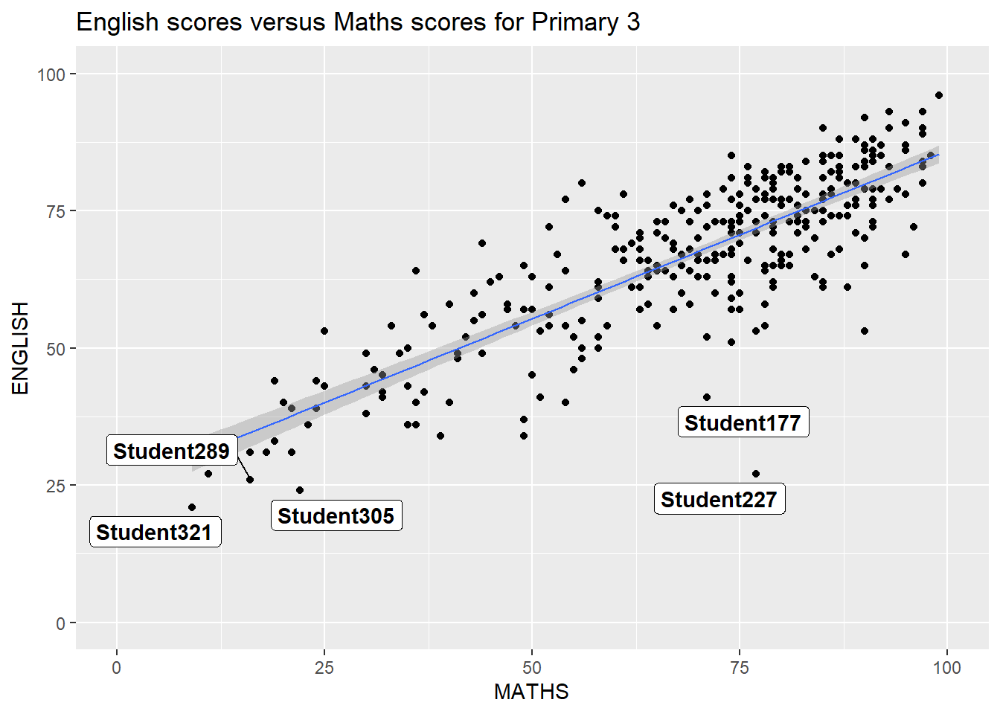
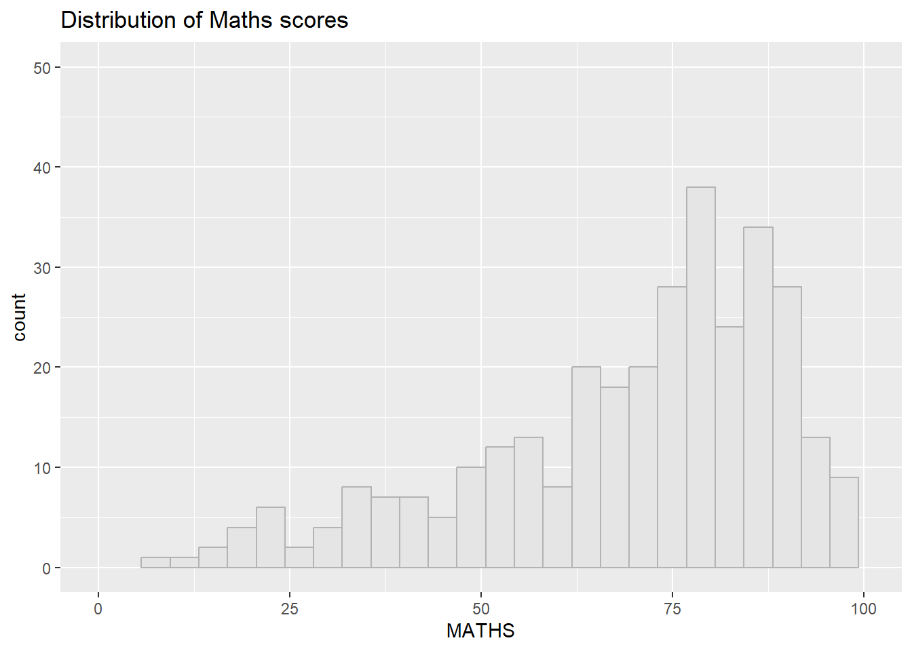
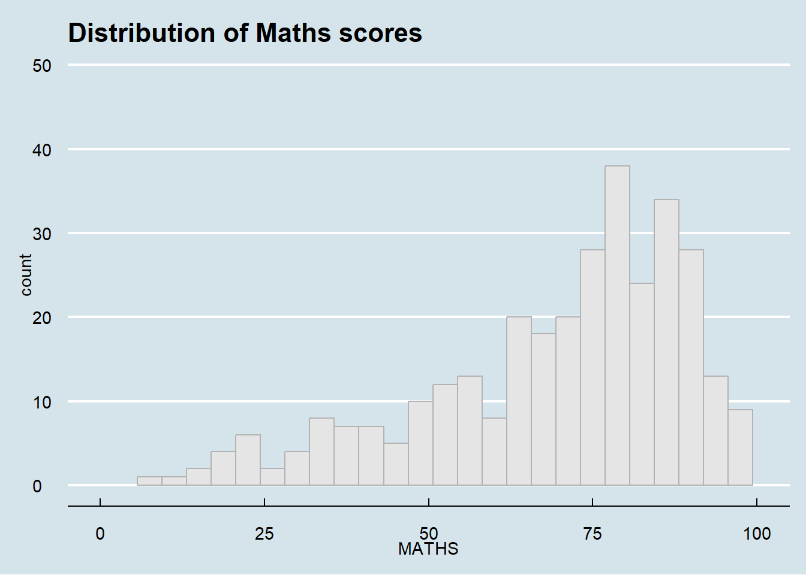
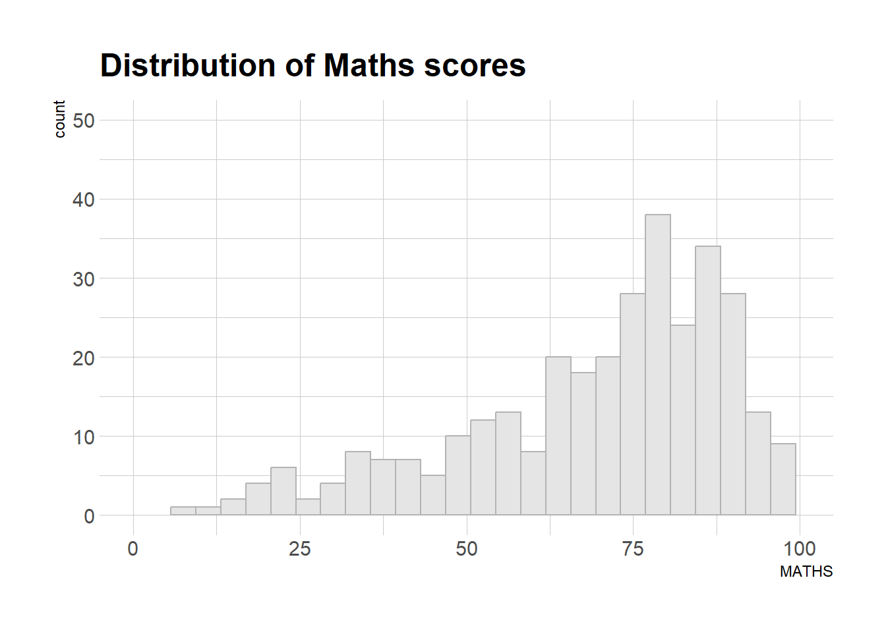
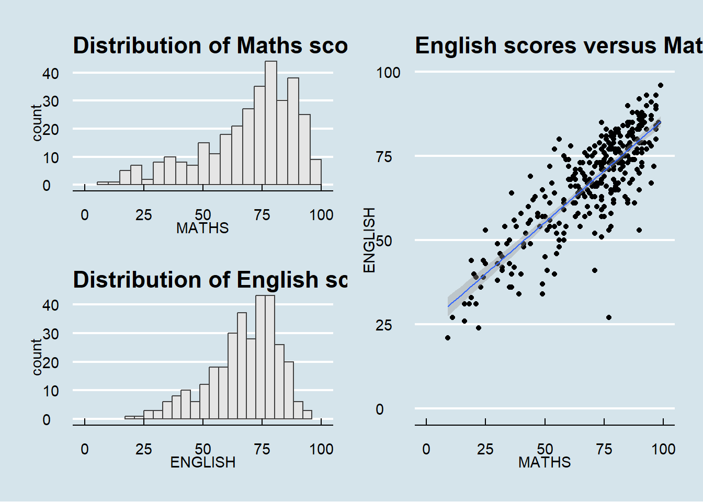

pacman::p_load(ggrepel,
patchwork,
ggthemes,
hrbrthemes,
tidyverse)Hands-on Exercise 2
exam_data <- read.csv("data/Exam_data (3).csv")2.3 Beyond ggplot2 Annotation: ggrepel
ggplot(data = exam_data,
aes(MATHS,ENGLISH))+
geom_point()+
geom_smooth(method=lm,
size=0.5)+
geom_label(aes(label=ID),
hjust=.5,
vjust=-.5)+
coord_cartesian(xlim = c(0,100),
ylim = c(0,100))+
ggtitle("English scores versus Maths scores for Primary 3")Warning: Using `size` aesthetic for lines was deprecated in ggplot2 3.4.0.
ℹ Please use `linewidth` instead.`geom_smooth()` using formula = 'y ~ x'
2.3.1 Working with ggrepel
ggplot(data = exam_data,
aes(MATHS,
ENGLISH))+
geom_point()+
geom_smooth(method=lm,
size=0.5)+
geom_label(aes(label=ID),
fontface="bold")+
coord_cartesian(xlim=c(0,100),
ylim=c(0,100)) +
ggtitle("English scores versus Maths scores for Primary 3")`geom_smooth()` using formula = 'y ~ x'
ggplot(data=exam_data,
aes(x= MATHS,
y=ENGLISH)) +
geom_point() +
geom_smooth(method=lm,
size=0.5) +
geom_label_repel(aes(label = ID),
fontface = "bold") +
coord_cartesian(xlim=c(0,100),
ylim=c(0,100)) +
ggtitle("English scores versus Maths scores for Primary 3")`geom_smooth()` using formula = 'y ~ x'Warning: ggrepel: 317 unlabeled data points (too many overlaps). Consider
increasing max.overlaps2.4 Beyond ggplot2 Themes
ggplot(data=exam_data,
aes(MATHS))+
geom_histogram(bins = 25,
color="grey70",
fill="grey90")+
coord_cartesian(xlim = c(0,100),
ylim = c(0,50))+
ggtitle("Distribution of Maths scores")
2.4.1 Working with ggtheme package
ggplot(data=exam_data,
aes(MATHS))+
geom_histogram(bins = 25,
color="grey70",
fill="grey90")+
coord_cartesian(xlim = c(0,100),
ylim = c(0,50))+
ggtitle("Distribution of Maths scores")+
theme_economist()
2.4.2 Working with hrbthems package
ggplot(data=exam_data,
aes(MATHS))+
geom_histogram(bins = 25,
color="grey70",
fill="grey90")+
coord_cartesian(xlim = c(0,100),
ylim = c(0,50))+
ggtitle("Distribution of Maths scores")+
theme_ipsum()Warning in grid.Call(C_stringMetric, as.graphicsAnnot(x$label)):
Windows字体数据库里没有这样的字体系列
Warning in grid.Call(C_stringMetric, as.graphicsAnnot(x$label)):
Windows字体数据库里没有这样的字体系列
Warning in grid.Call(C_stringMetric, as.graphicsAnnot(x$label)):
Windows字体数据库里没有这样的字体系列Warning in grid.Call(C_textBounds, as.graphicsAnnot(x$label), x$x, x$y, :
Windows字体数据库里没有这样的字体系列
Warning in grid.Call(C_textBounds, as.graphicsAnnot(x$label), x$x, x$y, :
Windows字体数据库里没有这样的字体系列
Warning in grid.Call(C_textBounds, as.graphicsAnnot(x$label), x$x, x$y, :
Windows字体数据库里没有这样的字体系列
Warning in grid.Call(C_textBounds, as.graphicsAnnot(x$label), x$x, x$y, :
Windows字体数据库里没有这样的字体系列
Warning in grid.Call(C_textBounds, as.graphicsAnnot(x$label), x$x, x$y, :
Windows字体数据库里没有这样的字体系列
Warning in grid.Call(C_textBounds, as.graphicsAnnot(x$label), x$x, x$y, :
Windows字体数据库里没有这样的字体系列
Warning in grid.Call(C_textBounds, as.graphicsAnnot(x$label), x$x, x$y, :
Windows字体数据库里没有这样的字体系列
Warning in grid.Call(C_textBounds, as.graphicsAnnot(x$label), x$x, x$y, :
Windows字体数据库里没有这样的字体系列
Warning in grid.Call(C_textBounds, as.graphicsAnnot(x$label), x$x, x$y, :
Windows字体数据库里没有这样的字体系列
Warning in grid.Call(C_textBounds, as.graphicsAnnot(x$label), x$x, x$y, :
Windows字体数据库里没有这样的字体系列Warning in grid.Call.graphics(C_text, as.graphicsAnnot(x$label), x$x, x$y, :
Windows字体数据库里没有这样的字体系列Warning in grid.Call(C_textBounds, as.graphicsAnnot(x$label), x$x, x$y, :
Windows字体数据库里没有这样的字体系列
2.5 Beyond Single Graph
p1 <- ggplot(data=exam_data,
aes(x = MATHS)) +
geom_histogram(bins=20,
boundary = 100,
color="grey25",
fill="grey90") +
coord_cartesian(xlim=c(0,100)) +
ggtitle("Distribution of Maths scores")p2 <- ggplot(data=exam_data,
aes(x = ENGLISH)) +
geom_histogram(bins=20,
boundary = 100,
color="grey25",
fill="grey90") +
coord_cartesian(xlim=c(0,100)) +
ggtitle("Distribution of English scores")p3 <- ggplot(data=exam_data,
aes(x= MATHS,
y=ENGLISH)) +
geom_point() +
geom_smooth(method=lm,
size=0.5) +
coord_cartesian(xlim=c(0,100),
ylim=c(0,100)) +
ggtitle("English scores versus Maths scores for Primary 3")2.5.2 Combining two ggplot2 graphs
p1 + p2
2.5.3 Combining three ggplot2 graphs
(p1 / p2) | p3`geom_smooth()` using formula = 'y ~ x'
2.5.5 Creating figure with insert
p3 + inset_element(p2,
left = 0.02,
bottom = 0.7,
right = 0.5,
top = 1)`geom_smooth()` using formula = 'y ~ x'
2.5.6 Creating a composite figure by using patchwork and ggtheme
# eval:false
patchwork <- (p1 / p2) | p3
patchwork & theme_economist()`geom_smooth()` using formula = 'y ~ x'